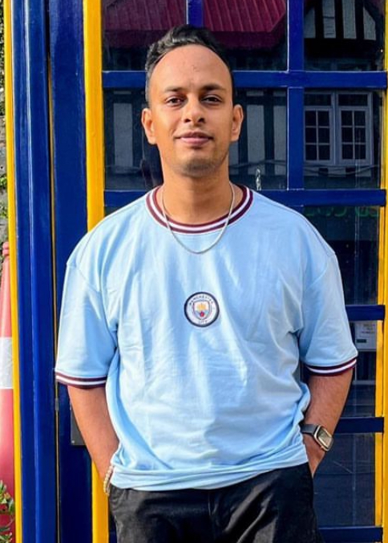

Atul Rauthan

+91-9756620477 | atulrauthan7@gmail.com
Summary
Over 10 years of experience in OpenText Products covering the areas of implementation, development, support and administration.
Skills & Abilities
ECM
- Implementation of OpenText ECM (v10.5, 16.0, 16.2 and 21.4), OTDS, AppWorks Gateway, Extended ECM for SAP Solutions, Brava! Remote Cache Servers, Enterprise Scan and other related OpenText products.
- Upgrading OpenText ECM from legacy versions to the latest using both in-place and parallel upgrades.
- Migrating from legacy applications to ECM using custom .NET based utilities.
- Migrating ECM applications across data centers.
- Patching and upgrading of modules and applications using System Center Manager.
- Good understanding of module development and debugging using Oscript plugins with Eclipse.
- Customizing Smart UI using CSS overrides.
- Development of third-party web and mobile apps using Content Server REST API.
- Development of .NET framework applications for integrating ECM with other business systems.
Development
- Good understanding of full stack web development using MERN stack
- Good understanding of Java and SQL server databases.
- Developing mobile apps using Ionic hybrid development platform.
Soft Skills
- Managing mid-scale projects across geographies.
- Leading and motivating teams to complete projects on time and efficiently.
- Excellent communication skills.
Work Experience
Prinicipal IT Applications Analyst, Air Products, June 2023 - Present, Pune, MH
- Working in capacity of a business analyst to understand business requirements and translate them into functional specifications for development.
Delivery Module Lead, Mphasis May 2021 – Present, Bangalore, KA
- Implementing Extended ECM v21.2 for EMEA region for their HR business.
- Upgrading Content Server v16.2 to v21.4 for APAC region. Support of the APAC region.
- Built integration to synchronize employee data between Peoplesoft and Content Server
- Built a mass document upload utility for migration using .NET framework.
- Developed web-reports and dashboards for several business use cases.
- Worked on Avature HR tools for talent sourcing and onboarding. Worked with business in different countries across APAC and EMEA region to understand their requirements and translate them into a solution in Avature.
Senior ECM Consultant, Causeway Software Technologies Pvt. Ltd. Sept 2018 – May 2021, Bangalore, KA
- Implementing and supporting a hosted ECM solution for multiple customers in the UK.
- Supporting multiple ECM customers with their on-premise ECM implementations.
- Implementing CAD Manager and developing schema XMLs for different customers.
- Parallel upgrade content server from v10.5 to v16.2.10.
- Helped move customers to different data centers.
- Implementation of Brava! And Blazon for content suite.
- Helped design customers architect their new environment for content server.
- Migrated search index to new admins servers.
- Worked on development of workflows, forms, custom views and web reports.
- Driven whole projects single-handedly to deliver to customers on time.
ECM Consultant, Avaali Solutions Pvt. Ltd. Sep 2016 – Sep 2018, Bangalore, KA
- Multinational FMCG customer based in Africa
-
- Implementation of Extended ECM for SAP Solutions v16.
- Designed live reports and web reports for data visualization for the customer.
- Responsible for handling change requests and incidents to support post go live.
- Global Pharmaceutical Regulator Affairs customer based in Mumbai, IN
-
- Worked intensively on workflows, forms and web reports.
- Responsible for understanding and designing business processes and translating them into workflows.
- Developed custom form views using web report power views.
- Developed web reports for metadata updates, permission assignment, task assignment and email notifications.
- Developed custom web report tags to cater to custom needs.
- Internal Projects
-
- Development of a mobile app using Ionic hybrid framework which worked with .NET REST APIs fetching data from SAP systems.
- Development of custom content server module to display custom data from SAP systems.
- Developing proposals and RFPs for prospective customers.
Application Development Analyst, Accenture Services Pvt. Ltd. Nov 2013 – Sep 2016, Bangalore, KA
- Worked for a global agricultural and food processing client based in the USA.
- Responsible for supporting customer’s ECM web applications based on Content Server v10 and Oracle UCM. Worked on diverse support and enhancement requests.
- Administration of servers, users and groups and workflows. Developed live reports based on requirements.
- Proposed and implemented movement of metadata from RAM to disk to improve search engine performance.
- Developed a power shell script to monitor disk buffer spaces and trigger email when a threshold is crossed.
- Worked on various components like Archive Center, Brava, Template Workspace, Cases and Binders etc.
Education
- HSC (PCM with C++) | 84% aggregate | 2009
- Bachelor of Technology | Electrical and Electronics Engineering | 2013
Languages
- English (fluent)
- Hindi (native)
Interests
- Web Development
- DIY Projects
- Cinematography
- Football
- Fitness
LinkedIn